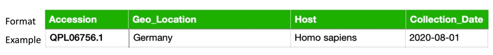
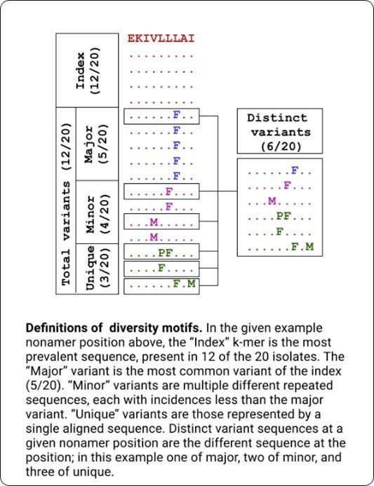

About
Viral infectious diseases are a major public health threat. Protein sequence diversity is one of the major challenges in the design of diagnostic, prophylactic and therapeutic interventions against viruses. Herein, we present DiMA, a tool designed to facilitate the quantification and dissection of viral protein sequence diversity dynamics. DiMA provides a quantitative measure of sequence diversity by use of Shannon’s entropy, applied via a user-defined k-mer sliding window to a protein alignment. Additionally, DiMA further interrogates the diversity by dissecting the entropy at each aligned k-mer position to various diversity motifs, based on the incidence of distinct k-mer sequences at the position. At a given position, index is the predominant sequence and all other distinct k-mers are referred to as total variants to the index, sub-classified into major variant (the common variant), minor variants (comprising of k-mers with incidence lower than major and higher than unique), and unique variants (k-mers seen once in the alignment). Moreover, the description line of the sequences in the input alignment can be enriched for inclusion of meta-data as part of the analysis, such as spatio-temporal information, among others. DiMA outputs a JSON file that provides multiple facets of sequence diversity: sequence name, k-mer position, entropy, distinct k-mers at the position, and their incidence, motif classification and metadata (if available). DiMA enables comparative sequence diversity dynamics analyses, within and between proteins of a virus species, and proteomes of different species.
Browser compatibility

Accesibility
The webserver is publicly available at: https://dima.bioinfo.perdanauniversity.edu.my
Workflow
 Figure 1
Figure 1
Input: Viral protein sequences are obtained from publicly available databases (NCBI virus, GISAID, etc.), aligned and submitted to DiMA in FASTA format.
Process: DiMA provides a quantitative measure of sequence diversity by use of Shannon’s entropy, applied via a user-defined k-mer sliding window. Further, the entropy value is corrected for sample size bias by applying a statistical adjustment. Additionally, DiMA further interrogates the diversity by dissecting the entropy value at each k-mer position to various diversity motifs. The distinct k-mer sequences at each position are classified into the following motifs based on their incidence.
Output: The entropy values, diversity motifs, and each of the k-mer corresponding metadata is plotted to provide a panoramic overview of the protein sequence diversity.
Input file and parameters
Input file DiMA only uses multiple sequence alignment (DNA or protein sequences) in FASTA format. Any alignment tool can be used to produce the MSA, such as MAFFT or MUSCLE as long as the input sequences provided to DiMA are in FASTA format.
Parameters
Viral sequence name
Name your protein analysis (such as Nucleoprotein, Matrix protein, Polymerase protein etc.)Low support threshold\
Corrected entropy is provided by a sample size bias correction using Lipinski’s rule. The support is defined as the number of sequences at a given k-mer position that does not harbor gap and unknown or ambiguous residues.
The support for each position is 30 by default. The user has the flexibility to set the value.
Kmer length Select k-mer window size appropriate for the analysis.\ While the minimum applicable size is 3, the maximum is equal to the total number position in the uploaded alignment. By default, DiMA uses a window size of nine (9; nonamer) to evaluate the viral diversity with respect to cellular immune response.
Header format to include metadata This optional functionality labels k-mers with corresponding metadata such as collection date, country origin, isolation host of the sequence. Simply, it parses the information on the sequence header (definition line).\

Because the format of metadata varies between databases, DiMA has relied on the format of NCBI Virus.
How to interpret the results
DiMA Output

Section 1 (Summary statistics)
A summary of information about the query: request ID, submission parameters, the total number of sequences in the alignment, and the number of low support positions.

Section 2 (Proteome diversity)
Entropy values indicate the level of variability at the corresponding k-mer positions, with zero representing completely conserved positions. Plots provide a holistic view of the diversity and are responsive and dynamic; one can easily hover and see the approximate entropy value of the hovered position.
Note
For a benchmark, the peak absolute entropy of 9.2 and total variants of 98% were observed for HIV-1 clade B (Hu et al., 2013).
Section 3 (Diversity motifs)
All sequences at each of the k-mer positions in the protein alignments were quantified and ranked based on the incidences of distinct sequences (as part of diversity motifs) present at the position, as described in Hu et al. (2013). See in edge below for the definition of diversity motifs.
{kind=link}
Users can select a position from the “SELECTED POSITION” box located in the upper right corner.

Section 4 (Metadata)
If the header format is provided in the analysis parameters, DiMA will make a pie chart for each type of the metadata.
The user should select a specific k-mer from the selected position for the metadata to appear. By default, the first peptide will be selected. In the example below, the index sequence is selected and host species distribution is shown in the plot.

Download
Download the raw result file in JSON format from the most right bottom icon.
FAQs
How to cite?
Shan et al., https://dima.bioinfo.perdanauniversity.edu.my/
Support
Please don’t hesitate to reach out to the developers for your questions, comments, or other feedback through mailing bioinfo@perdanauniversity.edu.my
Team
Shan Tharanga
Yongli Hu
Olivo Miotto
Eyyüb Selim Ünlü
Muhammet A. Çelik
Muhammed Miran Öncel
Hilal Hekimoğlu
Muhammad Farhan Sjaugi
Mohammad Asif Khan